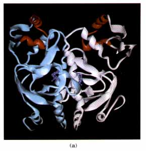
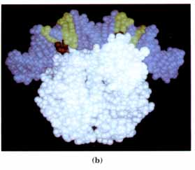
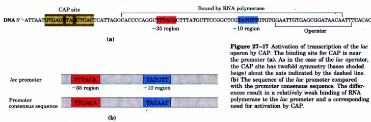
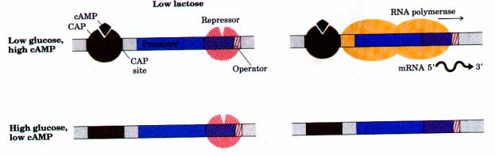
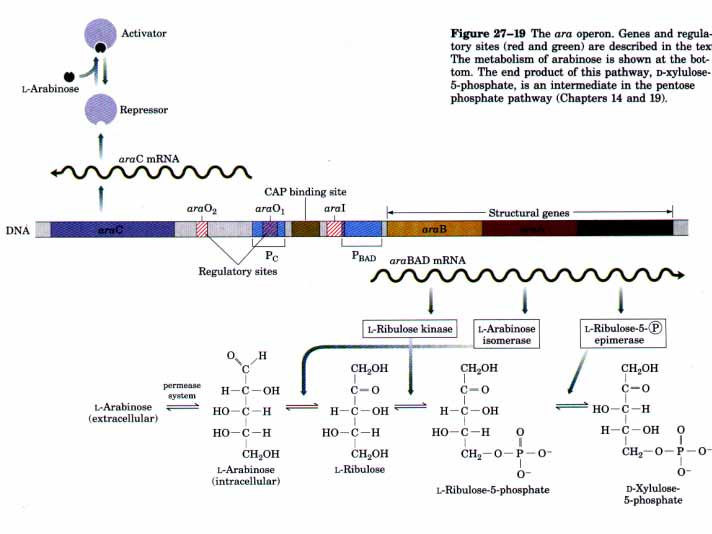
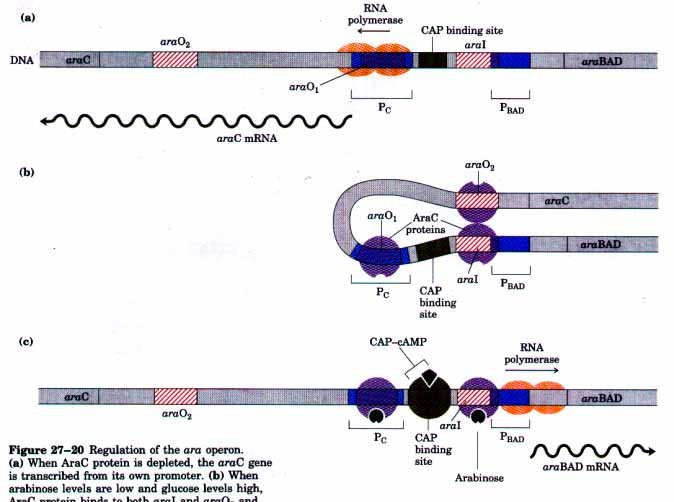

As in many other areas of biochemical investigation, the study of the regulation of gene expression was advanced earlier and faster in bacteria than in other experimental organisms. The examples of bacterial gene regulation presented here are chosen from among scores of wellstudied systems, in part because of their historical significance, but primarily because they provide a good overview of the range of regulatory mechanisms employed in bacteria. Many of the lessons learned here have proved relevant to the regulation of gene expression in eukaryotes.
The lactose, arabinose, and tryptophan operons feature a representative group of regulatory proteins, but the overall regulatory mechanisms exhibited by these systems are very different. A short discussion of the SOS response in E. coli provides an important example of a system in which many genes scattered throughout the genome are coordinately regulated. A new level of complexity is encountered in the bacteriophage λ system. The regulatory circuit in this system oversees a molecular choice between two biological fates and provides a good model for a regulated developmental switch.
The final two systems described here represent major deviations from the focus on regulatory proteins that bind to DNA and help illustrate the diversity of mechanisms in gene regulation. The regulation of ribosomal protein synthesis focuses not on transcription but on translation; many of the proteins that coordinate the synthesis of ribosomal proteins bind to RNA rather than DNA. The regulation of phase variation in Salmonella provides an example of another novel mechanism for regulation: control of transcription initiation by means of genetic recombination.
To begin, we return to the lac operon.
| The operator-repressor-inducer interactions provide an intuitively
satisfying model for an on/off switch in the regulation of gene expression. Years of
research, however, have shown that operon regulation is rarely so simple. Even a bacterium
has a highly complex environmenttoo complex for it to have sets of genes sensitive to only
one signal. Another major environmental factor affecting the expression of the lac
genes is the presence or absence of glucose. Glucose is the preferred cellular energy
source because of its central place in cellular metabolism. Hence, expressing the genes
required to metabolize sugars sucb as lactose, galactose, and arabinose would be wasteful
if glucose were abundant. What happens to the expression of the lac operon if
both glucose and lactose are present? Another regulatory mechanism, called catabolite repression, has evolved to keep the genes for catabolism of lactose, arabinose, and other sugars repressed in the presence of glucose even when these secondary sugars are also present. The repressive effect of glucose is mediated by cAMP and a protein called catabolite gene activator protein, abbreviated CAP. CAP is a homodimer (subunit M,. 22,000) with binding sites for DNA and cAMP. Binding is mediated by a helixturn-helix motif within the DNA-binding domain of the protein (Fig. 27-16). When glucose is absent, CAP binds to a specific site near the lac promoter (Fig. 27-17a) and stimulates RNA transcription 50-fold. CAP is therefore a positive regulatory element responsive to glucose levels, whereas the Lac repressor is a negative regulatory element responsive to lactose. The two act in concert; CAP has little effect on the system when the Lac repressor is blocking transcription, and dissociation of the repressor from the operator has little effect unless CAP is present to facilitate transcription. Stimulation by CAP is necessary because the wild-type lac promoter is a relatively weak promoter (Fig. 27-17b); the open complex of RNA polymerase and the promoter (Fig. 25-6) does not form readily unless CAP is present. |
  Figure 27-16 The three-dimensional structure of the CAP homodimer. (a) A ribbon representation with subunits shown in white and light blue. The helix-turn-helix DNA-binding motif is shown in red. Bound molecules of cAMP are shown in dark blue. (b) A space-filling representation of a CAP homodimer bound to DNA. Base pairs recognized by the protein are shown in green, and amino acid side chains that bind to these base pairs are shown in red. Note the bending of the DNA around the protein. |

The effect of glucose on CAP is mediated by cAMP (Fig. 27-18). CAP binding occurs when cAMP concentrations are high and the cAMP-binding site on CAP is occupied. In the presence of glucose, the concentration of cAMP declines, preventing CAP binding and thereby decreasing the expression of the Lac operon. Strong induction of the operon therefore requires both the presence of lactose (to inactivate the repressor) and the absence or low concentration of glucose (to increase the cAMP concentration and facilitate CAP binding).

Figure 27-18 Combined effects of glucose and lactose on expression of the lac operon. Efficient transcription occurs only when lactose concentrations are high and glucose concentrations are low.
CAP and cAMP are involved in the coordinated regulation of many operons, primarily those that encode enzymes for the metabolism of other secondary sugars such as galactose and arabinose. Such a network of operons with a common regulator is called a regulon. Regulons provide a mechanism for large concerted changes in cellular functions in response to environmental changes, and they can control the action of hundreds of genes. Other examples of regulons are the heat-shock gene system that responds to changes in temperature (p. 944) and the genes that are induced in E. coli as part of the SOS response to DNA-damaging agents, described later in this chapter.
A more complex regulatory scheme is found in the arabinose (c~ra) operon of E. coli. This system introduces several additional regulatory mechanisms. First, it is possible for one regulatory protein to exact both positive and negative control. In this case the regulatory protein is the AraC protein, and binding of a signal molecule alters its conformation from a repressor form that binds one DNA regulatory sequence to an activator that binds a different DNA sequence. Second, the AraC protein regulates its own synthesis by repressing transcription of its gene. This phenomenon is called autoregulation. Finally, the effects of some regulatory DNA sequences can be exerted from a distance; that is, these sequences are not always contiguous with promoters. Distant DNA sequences can be brought into proximity by DNA looping, mediated by specific protein-protein and protein-DNA interactions. This last feature makes the ara system an important paradigm for eukaryotic gene expression, in which regulation involving relatively distant sites in the DNA is quite common.

E. coli can use arabinose as a carbon source by converting it into xylulose-5-phosphate, an intermediate in the pentose phosphate pathway (Chapters 14 and 19). This requires the enzymes arabinose isomerase, ribulose kinase, and ribulose-5-phosphate epimerase (Fig. 27-19) encoded by the genes araA, araB, and araD, respectively. The ara operon (Fig. 27-19) includes these three genes, a regulatory site including two operators (ara01 and ara02), another binding site for the AraC regulatory protein called araI (I for inducer), and a promoter adjacent to araI. The araC gene is nearby and transcribed from its own promoter (near ara01) in the opposite direction from the araB, A, and D genes (called collectively, araBAD). A CAP binding site is adjacent to the ara operon promoter, and transcription is modulated by CAPcAMP as in the lac system. At this point the similarities largely end.
The role of AraC protein in the regulation of this system is complex (Fig. 27-20). First, it regulates its own synthesis, binding at ara01 and repressing transcription of the araC gene when its concentration exceeds about 40 copies per cell. Second, it acts as both a positive and a negative regulator of the araBAD genes, and in this capacity it binds to ara02 and araI. This regulation can be summarized in the form of four metabolic scenarios: (1) Glucose is abundant and arabinose is not.

Figure 27-20 Regulation of the ara operon. (a) When AraC protein is depleted, the araC gene is transcribed from its own promoter. (b) When arabinose levels are low and glucose levels high, AraC protein binds to both araI and ara02 and brings these sites together to form a DNA loop. The operon is repressed in this state. AraC protein also binds to ara0~, repressing further synthesis of AraC. (c) When arabinose is present and glucose concentration is low, AraC protein binds arabinose and changes conformation to become an activator. The DNA loop is opened, and the AraC protein acts in concert with CAP-cAmp to facilitate transcription.
Under these conditions, the AraC protein bound to ara02 and that bound to araI bind to each other, forming a DNA loop of about 210 base pairs. In this configuration the system represses transcription from the promoter for the araBAD genes (Fig. 27-20b). (2) Glucose is not present (or is at low levels) but arabinose is available. Under these conditions, CAP-cAMP becomes abundant and binds to its site adjacent to araI. Arabinose also binds to the AraC protein, altering its conformation. The DNA loop is opened, and the AraC protein bound at araI now becomes an activator, acting in concert with CAP-cAMP to induce transcription of the araBAD genes (Fig. 27-20c). (3) Arabinose and glucose are both abundant. (4) Arabinose and glucose are both absent. For both (3) and (4), the status of the system is not entirely clear, but it remains repressed in both cases. The ara operon is a complex regulatory system that provides rapid and reversible responses to changes in environmental conditions.